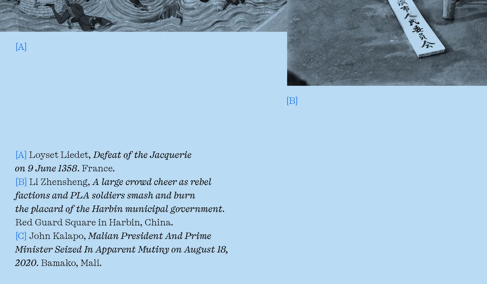
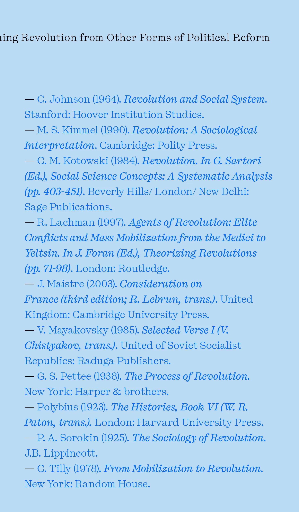
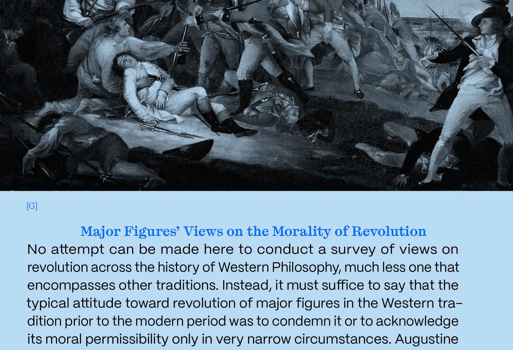

Right to Resist
Frontmatter
Primarily featuring Baby Blue and Black, the book's color scheme creates a play of light emerging from the dark. The blue emulates a clear blue sky as a symbol of freedom.
Pressato is used for the headline type, which fills the page with large titles, creating visuals inspired by protest posters.
Chapter 1 & 2:
Distinguishing Revolution from Other Forms of Political Reform
The Ethics and Philosophy of Revolution
Academic pieces, the first, written by Hasan Yenicirak and the second by Allen Buchanan & Alexander Motchoulski. Both pieces dive into the technical and moral aspects of revolution. The first chapter gets to the core of what revolution is and how it is different from other forms of political reform. The second chapter covers more about the ethical concerns and dilemmas that come along with such rebellions.



Art and Design in Revolution
Chapter 3:
Teaching Revolution
An interview I conducted with Professor Arden Stern that explores the ethics of revolution, the political role of design, and the importance of teaching history through the experiences of ordinary people rather than elites. Stern critiques capitalism, institutional power, and “apolitical” education, arguing that design can both reinforce and challenge systems of control. The conversation also examines how revolutions are documented, the ethics of political design and violence, and the responsibilities of students and educators in confronting inequality, power, and social change within creative institutions.
Chapter 4:
Fiction in Revolution
Written by award winning director and creative Gagan Gill, the piece revolves around the idea of creating through the act of creation. Inspired by Andor the chapter features Nemik’s Manifesto from the show as a bookend.